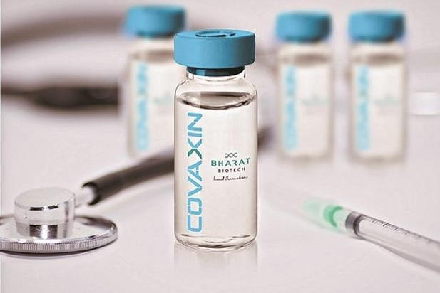

COVAXIN®, India's indigenous COVID-19 vaccine by Bharat Biotech is developed in collaboration with the Indian Council of Medical Research (ICMR) - National Institute of Virology (NIV). The indigenous, inactivated vaccine is developed and manufactured in Bharat Biotech's BSL-3 (Bio-Safety Level 3) high containment facility. The vaccine is developed using Whole-Virion Inactivated Vero Cell derived platform technology. Inactivated vaccines do not replicate and are therefore unlikely to revert and cause pathological effects. They contain dead virus, incapable of infecting people but still able to instruct the immune system to mount a defensive reaction against an infection. As an inactivated vaccine, Covaxin uses a more traditional technology that is similar to the inactivated polio vaccine. Initially, a sample of SARS-CoV-2 was isolated by India's National Institute of Virology and used to grow large quantities of the virus using vero cells. From then on, the viruses are soaked in beta-propiolactone, which deactivates them by binding to their genes, while leaving other viral particles intact. The resulting inactivated viruses are then mixed with the aluminium-based adjuvant Alhydroxiquim-II. The vaccine candidate is produced with Bharat Biotech's in-house vero cell manufacturing platform that has the capacity to deliver about 300 million doses. The company is in the process of setting up a second plant at its Genome Valley facility in Hyderabad to make Covaxin. The firm in collaboration with Government of Odisha is establishing another facility at Odisha Biotech Park in Bhubaneswar to commence Covaxin production by June 2022. Besides this, they are also exploring global tie-ups for Covaxin manufacturing.
In December 2020, Ocugen entered into a partnership with Bharat Biotech to co-develop and exclusively commercialise Covaxin in the US market; in June 2021, the partnership was extended to cover Canada. In January 2021, Precisa Med entered into an agreement with Bharat Biotech to supply Covaxin to Brazil. In May 2021, Haffkine Bio-Pharmaceutical Corporation Limited of Haffkine Institute entered into a memorandum of understanding (MoU) with Bharat Biotech and announced that the production of Covaxin by them will commence after obtaining support from the Maharashtra state government and approval from the Indian government whereas Indian Immunologicals Limited (IIL) has signed a commercial agreement with Bharat Biotech for producing the drug substance, a critical component of the vaccine Bharat Immunologicals and Biologicals Corporation (BIBCOL) will also manufacture the vaccine. In May 2020, Indian Council of Medical Research's (ICMR's) National Institute of Virology approved and provided the virus strains for developing a fully indigenous COVID-19 vaccine. In June 2020, the company received permission to conduct Phase I and Phase II human trials of a developmental COVID-19 vaccine codenamed BBV152, from the Drugs Controller General of India (DCGI), Government of India. A total of 12 sites were selected by the Indian Council for Medical Research for Phase I and II randomised, double-blind and placebo-controlled clinical trials of vaccine candidate. In January 2021, the company published Phase I trial results in The Lancet. On 8 March 2021, Phase II results were published in The Lancet. The study showed that Phase II trials had a higher immune response and induced T-cell response due to the difference in dosing regime from Phase I. The doses in Phase II were given at 4 weeks interval as opposed to 2 weeks in Phase I.
Read more here